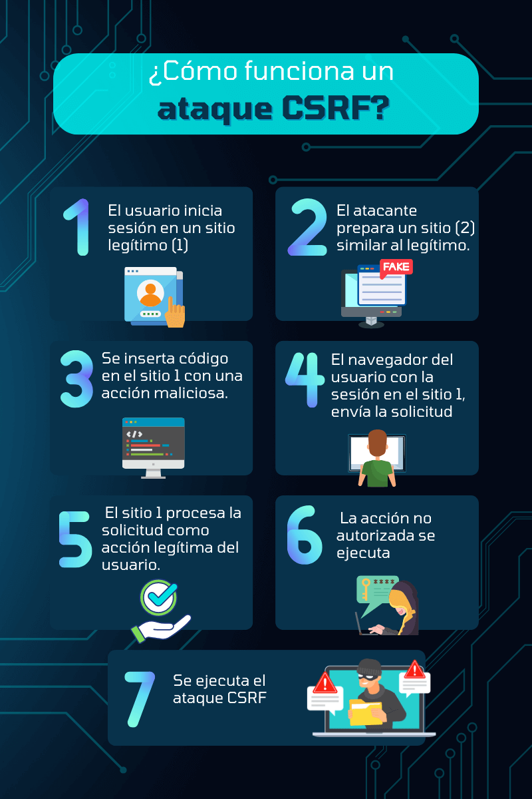

Acerca de la materia
Nombre del Profesor: Edder Iván Pimentel Félix
Nombre de la Materia: Programación Web
Unidad IV: Programación Del Lado Del Servidor
Nombre de la Tarea: Tarea I. Conceptos y ejemplos básicos en HTML.
Regresar a la página principal
Conceptos básicos
Mecanismos de seguridad en formularios
¿Qué es?
AJAX (Asynchronous JavaScript and XML) es una técnica de desarrollo web que permite a las
aplicaciones actualizar partes específicas de una página web sin recargarla completamente.
Esto se logra mediante solicitudes asíncronas al servidor, donde se envían y reciben datos en segundo plano,
frecuentemente en formato JSON o XML.
¿Para que sirve?
Permite cargar o refrescar contenido en una página (como publicaciones o comentarios) sin necesidad de recargar toda la página.
Hacer que aplicaciones como chats, notificaciones y paneles se actualicen automáticamente con nuevos datos.
Enviar datos al servidor (como formularios de registro o contacto) sin recargar la página.
¿Cuando se usa?
- Cargar contenido dinámico
- Actualizaciones en tiempo real
- Aplicaciones de una sola página (SPA)
- Prevención de recargas innecesarias
Captchas
Una de las mayores problemáticas de los formularios es que los robots se dediquen a enviar información,
buscando o explotando vulnerabilidades detectadas.
Es por ello fundamental que nos aseguremos de que son realmente humanos los que están interactuando con nuestros formularios.
Para ello se puede incorporar un sistema de captcha adecuado.
Existen diversas alternativas en el mercado, pero igual que aparecen desaparecen.
Una que perdura y en la que podemos confiar es reCaptcha, un servicio ofrecido por Google.
Básicamente es un sistema muy amistoso para el usuario que muchas veces se valida simplemente pulsando un checkbox.
El sistema de seguridad para formularios reCaptcha es gratuito en la mayoría de los casos.
Requiere registro para la obtención de un par de claves, la de sitio web y la clave secreta.
Esto lo podemos hacer fácilmente desde la sección «Admin Console» de la página de reCaptcha.
Una vez registrados en el servicio y habiendo dado de alta el sitio web,
tenemos que realizar la programación que nos permita integrarlo el sistema,
pero en ocasiones suele ser tan sencillo como configurar el correspondiente plugin en nuestro CMS.
Evitar ataques CSRF
Otro de los males de los formularios son los ataques CSRF (del inglés Cross-site request forgery)
o falsificación de petición en sitios cruzados, que se producen al realizarse solicitudes POST desde
otros dominios que los ciberdelincuentes aprovechan para apoderarse de sesiones abiertas sobre los sitios atacados.
CSRF se basa generalmente en un token, que simplemente se valida antes de aceptar el procesamiento de la información
que viene mediante solicitudes POST. La mayoría de los frameworks (entre ellos Laravel o Symfony) incluyen por defecto
protección anti CSRF, una razón más para usarlos.
Regresar a la página principal
Introducción a AJAX
¿Qué es?
JavaScript asíncrono y XML (AJAX) es una combinación de tecnologías de desarrollo de aplicaciones web que hacen que las
aplicaciones web respondan mejor a la interacción del usuario. Cada vez que los usuarios interactúan con una aplicación web,
por ejemplo, al hacer clic en botones o en casillas de verificación, el navegador intercambia datos con el servidor remoto.
El intercambio de datos puede provocar que las páginas se vuelvan a cargar e interrumpir la experiencia del usuario.
Con AJAX, las aplicaciones web pueden enviar y recibir datos en segundo plano para que solo se actualicen pequeñas partes
de la página según sea necesario.
¿Para que sirve?
Ajax permite que un usuario de una aplicación web interactúe con una página web
sin la interrupción de la recarga constante de la página web.
¿Cuando se usa?
- Validación de formularios
- Actualizaciones en tiempo real
- Autocompletado
- Enviar datos al servidor
- Cargar datos dinámicamente
Regresar a la página principal
JQuery
¿Qué es?
jQuery es una biblioteca de JavaScript minificada de código abierto creada para simplificar las operaciones de JavaScript.
Puedes utilizar jQuery para codificar rápidamente una serie de comandos diferentes que te llevarían mucho más tiempo si utilizaras código HTML.
¿Para que sirve?
jQuery se usa para crear animaciones y efectos visuales en páginas y aplicaciones web. Resulta muy útil en Front End,
para desarrollar la parte visible, y en Full Stack, para crear sitios web desde cero.
También es popular entre los desarrolladores con poca experiencia en programación.
¿Cuando se usa?
- Proyectos heredados
- Compatibilidad con navegadores antiguos
- Complementos (plugins)
- Tareas pequeñas y específicas
Regresar a la página principal
Mootools
¿Qué es?
MooTools es un framework de JavaScript compacto, modular y orientado a objetos diseñado para
desarrolladores de JavaScript de nivel intermedio a avanzado . Le permite escribir código potente, flexible y compatible
con todos los navegadores gracias a su API elegante, bien documentada y coherente.
MooTools tiene como objetivo mejorar JavaScript.
¿Para que sirve?
MooTools tiene una funcionalidad similar a jQuery, pero se enfoca más en ofrecer una estructura orientada a objetos.
¿Cuando se usa?
- Aplicaciones modulares
- Compatibilidad con navegadores antiguos
- Estructura orientada a objetos
Regresar a la página principal
Prototype
¿Qué es?
Prototype es una biblioteca de JavaScript lanzada en 2005, diseñada para facilitar el desarrollo web
al proporcionar funciones para manipulación del DOM, manejo de eventos, solicitudes AJAX y programación orientada a objetos.
Fue una de las primeras bibliotecas en popularizar el uso extensivo de JavaScript en aplicaciones web y ayudó a resolver problemas
de compatibilidad entre navegadores de la época.
¿Para que sirve?
- Manipulación del DOM
- Manejo de eventos
- Solicitudes AJAX
- Extensiones útiles para objetos nativos
- Programación orientada a objetos
¿Cuando se usa?
- Sistemas que usan Ruby on Rails antiguos
Regresar a la página principal
Ejemplos básicos
Mecanismos de seguridad en formularios
Ejemplo de captcha de texto
Aquí indica que, para poder procesar la solicitud, el usuario deberá llenar el espacio con las letras que se leen en azul.
Cuando se han tecleado correctamente, el usuario puede continuar con su proceso, que en este caso es crear una cuenta.

Ejemplo de captcha visual
Seguramente ya has visto este tipo de captcha, en el que tienes que seleccionar
imágenes de una misma categoría. En este caso pide que «selecciones todas las imágenes donde veas botes».
Cuando has elegido todas puedes hacer clic en el botón para verificar que en verdad eres humano.

Ejemplo de captcha de juego de palabras
Existen muchas formas para hacer juegos de palabras en captchas; en este caso hay dos palabras tachadas y borrosas.
Solamente un humano podría detectarlas y escribirlas.

Ejemplo de captcha con campos ocultos
Cuando se trata de campos ocultos el sistema identifica de antemano un comportamiento humano y permite cierta acción,
por ejemplo, descargar un archivo. Sin embargo, si el sistema detecta un comportamiento robótico (por ejemplo, una descarga de un volumen de archivo), entonces podría arrojar un
captcha como el que vemos en la imagen.

Ataques CSRF

Regresar a la página principal
Introducción a AJAX
Formularios Interactivos
Imagina que estás completando un formulario en línea y cometes un error. Con AJAX,
el sitio web puede verificar y validar tus datos en tiempo real sin tener que recargar la página completa.
Esto te permite corregir los errores de forma instantánea y continuar con el proceso de envío sin interrupciones.

Búsqueda en vivo
Cuando realizas una búsqueda en un sitio web, AJAX puede mostrar los resultados a medida que escribes,
sin tener que cargar una nueva página. Esto brinda una experiencia de búsqueda más fluida y eficiente, ya que puedes ver los resultados
en tiempo real y ajustar tus términos de búsqueda de manera instantánea.

Carga dinámica de contenido
En sitios web con secciones que se actualizan con frecuencia, como las redes sociales,
AJAX permite cargar nuevas publicaciones y comentarios sin tener que recargar toda la página.
Esto crea una experiencia de navegación fluida, evitando interrupciones y ahorrando tiempo al usuario.

Regresar a la página principal
JQuery
En este ejemplo, cuando se hace clic en el botón con el id “cambiarColor”,
el fondo del cuerpo de la página se cambia a color celeste.


Regresar a la página principal
Mootools
Efectos y animaciones
Crear transiciones visuales.

Efectos de ocultar/mostrar
Cambiar la visibilidad de elementos.

Regresar a la página principal
Prototype
Efectos visuales
Prototype incluye la biblioteca Script.aculo.us para animaciones.

Serialización de formularios
Convertir los datos de un formulario en una cadena para enviar al servidor.

Regresar a la página principal
Fuentes de Información
Sistemas de seguridad para formularios web. (s/f). Arsys.
Recuperado el 21 de noviembre de 2024, de https://www.arsys.es/blog/seguridad-formularios
(S/f). Amazon.com. Recuperado el 21 de noviembre de 2024,
de https://aws.amazon.com/es/what-is/ajax/#:~:text=AJAX%20permite%20a%20las%20aplicaciones,pase%20a%20la%20siguiente%20secci%C3%B3n.
Rational software architect 9.6.1. (2021, marzo 4).
Ibm.com. https://www.ibm.com/docs/en/rational-soft-arch/9.6.1?topic=page-asynchronous-javascript-xml-ajax-overview
Gustavo, B. (2019, abril 19). ¿Qué es jQuery? Introducción para principiantes.
Tutoriales Hostinger. https://www.hostinger.mx/tutoriales/que-es-jquery
Saavedra, J. A. (2023, julio 17). ¿Qué es jQuery y cómo usarlo? Ebac. https://ebac.mx/blog/que-es-jquery
MooTools Core. (s/f). Mootools.net. Recuperado el 22 de noviembre de 2024, de https://mootools.net/core
Coppola, M. (2022, agosto 1). Qué es el captcha, para qué sirve, qué tipos hay y ejemplos. Hubspot.es. https://blog.hubspot.es/website/que-es-captcha
Axarnet. (s/f). Qué es AJAX y para qué sirve【Ejemplos prácticos】. Axarnet.es. Recuperado el 23 de noviembre de 2024, de https://axarnet.es/blog/ajax
Casero, A. (2023, agosto 25). Tips y ejemplos para aprender jQuery desde cero. KeepCoding Bootcamps. https://keepcoding.io/blog/aprender-jquery/
Regresar a la página principal